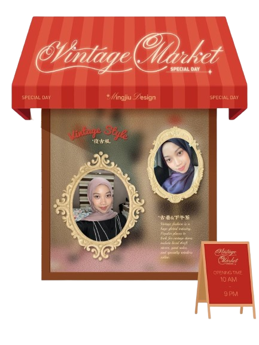

Areta Nurul Hasna
Profil Singkat
Halo! Namaku Areta Nurul Hasna, aku seorang siswi level 9 SMPIT Al-Haraki, .
Tentang Saya
Saya adalah orang yang cenderung pemalu, tapi bisa menjadi lebih terbuka dan ramai ketika sudah merasa nyaman. Saya juga terus berusaha untuk belajar dan memahami pelajaran dengan baik dan terus mengembangkan diri
Minat dan Bakat
Minat saya ada di bidang kesehatan dan dance. Untuk bakat saya memiliki kemamuan di tari dan desain (meskipun bukan menggambar), dan saya terus mencoba mengembangkan kemampuan tersebut.
Cita-cita dan Harapan
Cita-cita saya adalah memiliki masa depan yang baik, terutama di bidang yang saya minati seperti kesehatan. Harapan saya, semoga saya bisa terus belajar, berkembang, dan mencapai apa yang saya inginkan serta membanggakan orang tua
Kesan dan Pesan Selama Kelas IX
Kesan: Selama di kelas 9, saya mendapatkan banyak pengalaman dan pelajaran baru yang sangat berharga. Saya juga belajar untuk lebih memahami banyaj hal, baik dalam pelajaran maupun dalam kehidupan sehari-hari Pesan: Semoga ke depannya kita semua bisa sukses dengan jalannya masing-masing dan tidak melupakan kenangan selama di kelas 9. Terima kasih juga untuk guru-guru atas bimbingannya selama ini.